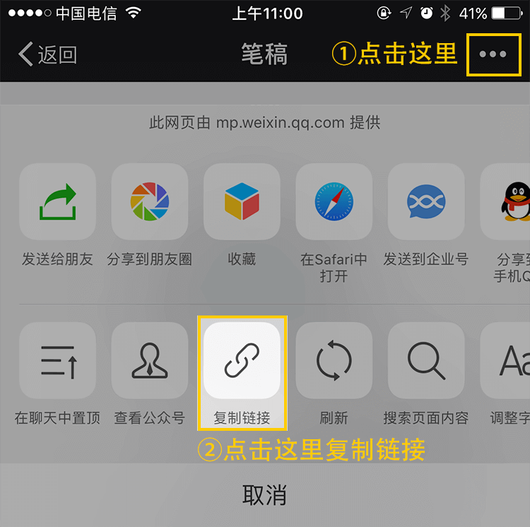
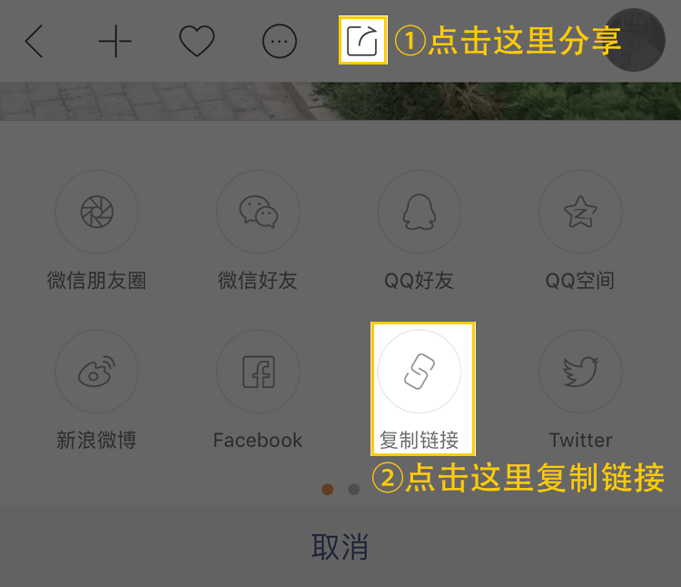

奔走相告，快马小报采集最新内容上线啦
新版hin精彩哦，在原来采集文章的基础上
新增了趣图和资源共享两大模块
具体怎么玩，容小编我给你唠唠
新加入的亲们别懵哦~
采集权限和规范 点这里~
文章采集技巧 点这里~
查看我的采集 点这里
下面我们介绍下，怎么分享趣图和资源哦~这两个新功能看名字就觉得很有趣呢~~
1：快马小报（1.4.4以上版本）
2：百度网盘（资源分享需要）
准备好了吧~~您接着往下看
先戳开快马小报，点击值得看
打开就看到是咱们快马小报的用户们采集的内容啦
精不精彩！刺不刺激！

点击底部中间位置那个“ + ”
出现了三个选项，文章、图片、资源
花样选择发布内容咯，总有一个套路你喜欢

写好推荐语，选择好图片，点击发布就OK咯↓


真实编辑推荐语&上传图片，选定资源分类
PS：密码项是选填的，根据个人情况加咯；但是如果你资源本身带有密码的话，是一定要填写的哈~↓

1：快马小报（1.4.4以上版本）
2：微信
3：快手
在微信或快手中看到优质的内容，可以复制其链接；↓
微信中复制链接的方式如下：
快手中复制链接的方式如下：
打开快马小报，到值得看
点击页面底部中间位置那个“ + ”
出现了三个选项，文章、图片、资源

点击就能看到最最最基础的教程

怎么申请采集资格
看最后一条“开通采集功能”
有三个小问题，您得看一下，认真选一选
然后点击“提交申请”↓

提交之后，会提示你可以添加审核员的QQ，如果添加就会知道审核进度咯，顺带调戏一下咱们的审核员小哥哥也是可以的
一般3-5D内会出审核结果哦
太心急你就去找审核员，Ta也会告知您进度哈↓

哪里看获取采集资格
点击打开我的-左上角的消息列表里面 会有消息通知您是否开通成功了哈↓

如何查看我的采集
All采集的内容点击发布之后，都可以在我的-我的采集页面，查看自己发布中的采集内容哈
按照采集规则，发布中的内容片刻之后
就会展示在已上线列表中↓

不符合规则的采集则会展示在已下架的列表中
关于采集内容的规则
a) 设计政治、暴力、色情及其他违法内容
b) 广告、加微信、加qq、其他app宣传
c) 有手机号、QQ号、微信号露出
（包含昵称非法）
d) 低俗、恶心、反感、攻击、诋毁他人或产品
e) 图片没有实质内容、普通风景
毫无意义的普通物品照片
f) 配文字过于敷衍，如纯标点、纯无意义乱码
含以上，均无法成功发布采集内容，请周知。
以上就是全新采集版块的具体使用教程和采集规则，看下来是不是一目了然了，还有不会的就私信小编吧
嘘，悄悄的告诉你~这样的采集更容易通过
搞笑动图&内涵动图（合法）、科普图片、有趣的自拍、有意义的摄影作品、稀有资源（合法）如小众却饱含意义的电影、文章、作品、对于采集内容的描述准确真实有内涵......